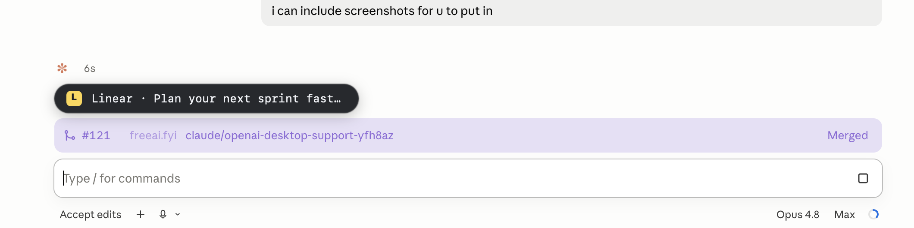

Earn Claude credits everywhere you use AI.
FreeAI shows one sponsored line while the AI is thinking — and returns 50% of the revenue to you as credits for Claude Pro or Max. Pick where you work and install below.

Chrome extension
Works inside ChatGPT, Claude & Gemini in your browser. Free, installs in seconds, and reads none of your prompts — it only shows the sponsored line while the assistant is thinking.
Support & troubleshooting
I don't see the sponsored line
The line only appears while ChatGPT, Claude, or Gemini is actively thinking, and it's hidden the moment the answer arrives. After installing, refresh the AI tab so the extension loads into the page.
Still nothing? Open chrome://extensions and confirm FreeAI is toggled on.
Does the extension read my prompts?
No. It reads none of your prompts or the model's replies — it only detects the visible "thinking" state (the spinner or Stop button) so it knows when to show the sponsored line.
How do I remove the extension?
Open chrome://extensions, find FreeAI, and click Remove.
Claude Code
A reversible claude shell alias shows one sponsored line in the status
bar only while Claude Code is thinking. Every flag, argument, and
exit code is forwarded untouched.
npm install -g @freeai.fyi/terminal && freeai claude setup
Support & troubleshooting
It installed, but I don't see a sponsored line
Run the built-in probe — it runs the full ad pipeline and ends with an adsWillServe verdict:
freeai claude doctor
"count": 0 means nothing's in rotation right now; "error": "fetch failed" means your network can't reach the API (firewall, proxy, or offline); adsWillServe: false points at the failing step above it. And remember — the line only shows while Claude Code is actively working.
The claude alias isn't active
Check what claude resolves to — it should say aliased to freeai claude run:
type claude
If it doesn't, reload your shell — source ~/.zshrc (or ~/.bashrc, or ~/.config/fish/config.fish); setup prints the exact path. To watch a run decide whether to inject an ad, use FREEAI_DEBUG=1 claude; if you see no freeai[debug] lines at all, the alias isn't loaded yet.
Does FreeAI change my real claude command?
No — it adds a reversible shell alias and never edits your Claude install or settings. It also fails open: if anything (network, config, ad fetch) goes wrong, the wrapper just runs plain claude. Undo it any time with freeai claude restore.
What do I need to install it?
Claude Code already on your PATH (claude --version), Node.js 20.12 or newer (node --version), and a supported shell — zsh, bash, or fish. No account is needed to start earning; a device credential is created locally on first run.
How do my terminal credits reach my account?
Link by email during freeai claude setup (or freeai claude link), then confirm with freeai claude doctor. Redeem your balance anytime on the user login page — the terminal client shares the same device-credit balance as the extension.
Turn it off for one run, or uninstall
Skip ads for a single run without uninstalling: FREEAI_DISABLE=1 claude.
Remove the alias entirely with freeai claude restore, then npm rm -g @freeai.fyi/terminal. Add rm -rf ~/.freeai to clear local state.

Desktop app
A lightweight macOS menu-bar app that anchors the sponsored line to Claude Desktop and ChatGPT Desktop while they think. It never injects code, never modifies the app, and never reads your prompts.
Support & troubleshooting
macOS won't let me open the app
If macOS says the app "can't be opened" or is from an unidentified developer, Control-click (or right-click) freeai.fyi in your Applications folder and choose Open → Open. You only need to do this once.
The sponsored line never appears
The app needs Accessibility permission to tell when the assistant is generating. Grant it in System Settings → Privacy & Security → Accessibility — the Setup window polls live, so it flips to Granted the moment you toggle it on. You can reopen Setup any time from the menu-bar Setup item.
The card only shows while Claude or ChatGPT Desktop is the frontmost window and actively generating.
Where is the app? It's not in the Dock
It's a menu-bar app — look for the FreeAI item in your menu bar (top-right). From there you can pause it or quit.
How do I uninstall the desktop app?
Drag freeai.fyi from your Applications folder to the Trash.
FAQ
The questions people ask before installing — earnings, privacy, the 50% split, and how to turn it off. Product-specific help lives under each product above.
Is FreeAI really free?
Yes — free forever, with no subscription and no catch. You install it once, keep using the AI tools you already use, and 50% of the ad revenue your spinner earns comes back to you as Claude credits. You never pay us a cent.
How much can I earn?
It depends on how much you use AI — every 5 seconds an assistant spends thinking is one impression, and the more you prompt, the more impressions you generate. Heavy daily users earn the most.
You keep 50% of whatever your impressions sell for, redeemable as Claude credits.
What are Claude credits, and how do I redeem them?
Your earnings accrue as a balance you can convert into a Claude gift card — usable toward Claude Pro or Max. Sign in to your portal at freeai.fyi/redeem to see your balance and redeem. We never touch your bank details.
Does FreeAI read my prompts or conversations?
No. It reads none of your prompts or the model's output. It only detects whether the assistant is currently thinking — a visible Stop button, a busy region, or a streaming marker — so it knows when to show the sponsored line. The terminal client reads only structural transcript metadata needed to tell active from idle.
Which AI tools does it work with?
ChatGPT, Claude and Gemini in your browser via the Chrome extension, Claude Code in your terminal, and the native Claude and ChatGPT desktop apps on macOS. The sponsored line is styled to look native on each surface and only appears while the AI is working.
Do I need an account to start earning?
No — you're anonymous from day one and start earning the moment you install. An email is only needed when you want to redeem your credits for a Claude gift card, so we can deliver it to you.
Where do I see my earnings?
Your portal at freeai.fyi/redeem — sign in with the email you linked.
How does the 50% split work — can I trust it?
Because you can audit it. Our backend is open source — the auction, the ledger, and the credit sweep. Your balance is an append-only ledger recomputed from every credit and debit, and amounts are stored in 1/1000ths of a cent so the 50/50 split is exact, never rounded in our favor.
Will the ads get in my way?
It only appears while the assistant is thinking, then gets out of the way when the answer arrives. No pop-ups, no autoplay, no takeovers. You can opt out any time.
Are you affiliated with Anthropic, OpenAI, or Google?
No. FreeAI.fyi is an independent product and is not affiliated with Anthropic, OpenAI, or Google. "Claude," "ChatGPT," and "Gemini" are trademarks of their respective owners.
Can I advertise on FreeAI?
Yes. You bid live for the sponsored line that shows while ChatGPT, Claude and Gemini think — the one moment every AI user stares at the screen. You're billed for impressions only; clicks are tracked, never billed. Set up a campaign →